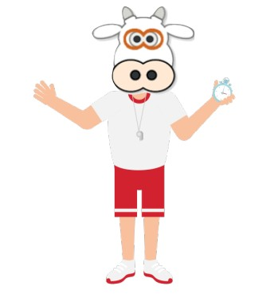
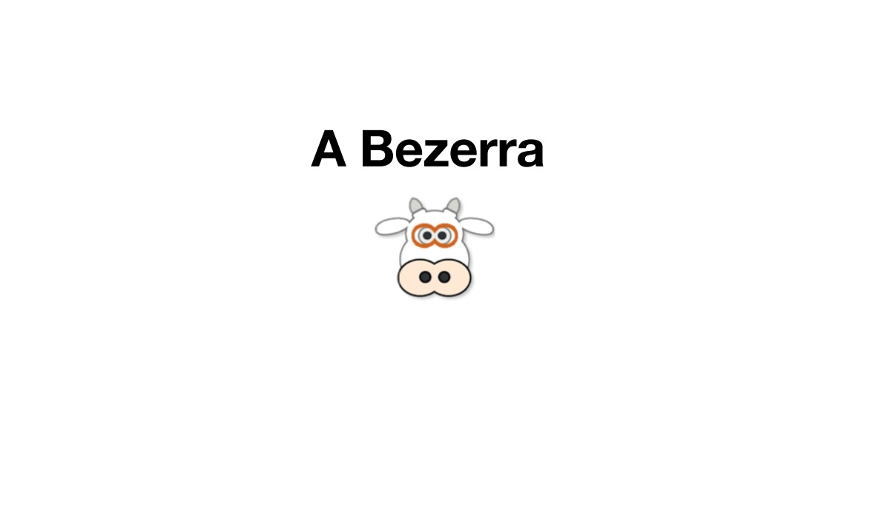

Informativo sobre Animais
-

-

-

-

-

-

- 
Raposa
As raposas são animais mamíferos e onívoros pertencentes à família Canidae. São vulpídeos de porte médio, caracterizados por um focinho comprido e uma cauda longa e peluda. Também apresentam como particularidade suas pupilas ovais, semelhantes às pupilas verticais dos felídeos. As raposas são animais mamíferos e onívoros pertencentes à família Canidae. São vulpídeos de porte médio, caracterizados por um focinho comprido e uma cauda longa e peluda.
Esquilo
Os esquilos pertencem a uma grande família de mamíferos roedores, de pequeno e médio porte, conhecida como Sciuridae. No Brasil, são também conhecidos como serelepe, caxinguelê, caxinxe, quatimirim, quatipuru, agutipuru ou acutipuru. Na Galiza e em algumas zonas de Portugal, também são conhecido por esquio. Os esquilos estão espalhados por quase todo o mundo, a maioria nas zonas de climas temperado ou tropical, mas também em algumas zonas de clima frio. Como todos os roedores, possuem presas fortíssimas, com que roem facilmente sementes, principalmente bolotas.
Urso
Os ursos são mamíferos membros da família ursidae, junto com os pandas. Com oito espécies em cinco gêneros (Ursus, Tremarctos, Melursus, Helarctus e Ailuropoda) é uma família pouco diversa. São eles: Urso de Óculos, Urso Beiçudo, Urso-do-Sol, Urso Negro-Asiático, Urso Negro-Americano, Urso Polar, Urso Pardo e Urso Panda. São animais sempre grandes e geralmente onívoros, existem em todos os continentes, exceto na Austrália e Antártida.
Lobo
O lobo é um animal carnívoro pertencente à mesma família dos cães domésticos. O termo lobo geralmente é utilizado para fazer referência ao lobo-cinzento, que apresenta nome científico Canis lupus. Essa espécie de lobo destaca-se por ser uma espécie carnívora e que vive em grupos denominados alcateias. Nas alcateias, de forma geral, apenas um casal é responsável pela reprodução.
Macaco
Macaco é um termo utilizado para referir-se a algumas espécies de primatas. Nem todos os primatas são macacos, mas todos os macacos são primatas. A ordem Primates está dividida em duas subordens: Strepsirrhini e Haplorrhini. Na subordem Strepsirrhini, estão inclusos lêmures, lórises e gálagos. Na subordem Haplorrhini, por sua vez, incluem-se os társios e antropoides. Os antropoides incluem os macacos e o ser humano.
Leão
O leão é um mamífero pertencente à ordem Carnivora e família Felidae, sendo conhecido como “rei das selvas”. Ele se alimenta de outros animais, como gnus e zebras, e vive em grupos, que apresentam divisões bem marcadas, sendo o macho responsável pela defesa do grupo e a fêmea pela caça e cuidado com os filhotes.
A Bezerra
Pouco é conhecido sobre este. Sabemos que ele estudou ciência da computação na Unicarioca e hoje da aula de Desenvolvimento Web.
FAQ
- Qual a idade dos animais?
- As raposas são animais mamíferos e onívoros pertencentes à família Canidae. São vulpídeos de porte médio, caracterizados por um focinho comprido e uma cauda longa e peluda.
- Eles são fantásticos?
- Também apresentam como particularidade suas pupilas ovais, semelhantes às pupilas verticais dos felídeos.
- Qual a diferença?
- As raposas são animais mamíferos e onívoros pertencentes à família Canidae. São vulpídeos de porte médio, caracterizados por um focinho comprido e uma cauda longa e peluda.
- Como proteger?
- Também apresentam como particularidade suas pupilas ovais, semelhantes às pupilas verticais dos felídeos.


- 
Números
Contato

- derikegustavo@unicarioca.com
- +55 (21) 9999-9999
- Rua do Conde, nº 21
- Rio de Janeiro - RJ
- Doe 0 bitcoin para nos ajudar
- Seg à Sex das 8 às 18